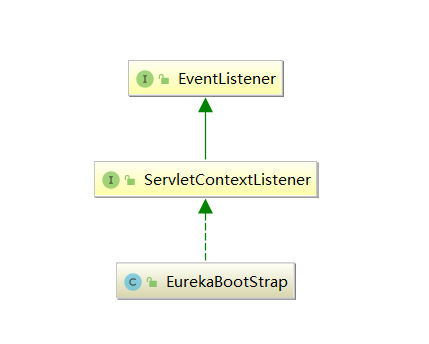

透彻理解Spring Cloud系列（四）——Eureka启动：整体流程
从本章开始，我将正式对Eureka的源码进行分析。我会首先讲解Eureka-Server的启动流程，在这个过程中，我会对涉及到的Eureka的一些核心组件进行讲解，理解这些组件的概念是学习后面源码的基础。
注意，Eureka源码中有很多和AWS亚马逊云服务相关的组件，这些我都会全部略过。
一、代码结构
从上一章我们已经知道，eureka-server本质就是对eureka-client和eureka-core进行了一层封装，方便以web应用的方式在web容器中进行部署。我们可以看下eureka-server模块的基本结构，本质就是个java web应用：
C:\USERS\RESSMIX\DESKTOP\EUREKA\EUREKA-SERVER
└─src
├─main
│ ├─resources
│ └─webapp
│ └─WEB-INF
└─test
└─java
└─com
└─netflix
└─eureka
└─resources
1.1 web.xml
它的web.xml里面的内容也很简单：
<?xml version="1.0" encoding="UTF-8"?>
<web-app version="2.5"
xmlns="http://java.sun.com/xml/ns/javaee"
xmlns:xsi="http://www.w3.org/2001/XMLSchema-instance"
xsi:schemaLocation="http://java.sun.com/xml/ns/javaee
http://java.sun.com/xml/ns/javaee/web-app_2_5.xsd">
<listener>
<listener-class>com.netflix.eureka.EurekaBootStrap</listener-class>
</listener>
<filter>
<filter-name>statusFilter</filter-name>
<filter-class>com.netflix.eureka.StatusFilter</filter-class>
</filter>
<filter>
<filter-name>requestAuthFilter</filter-name>
<filter-class>com.netflix.eureka.ServerRequestAuthFilter</filter-class>
</filter>
<filter>
<filter-name>rateLimitingFilter</filter-name>
<filter-class>com.netflix.eureka.RateLimitingFilter</filter-class>
</filter>
<filter>
<filter-name>gzipEncodingEnforcingFilter</filter-name>
<filter-class>com.netflix.eureka.GzipEncodingEnforcingFilter</filter-class>
</filter>
<filter>
<filter-name>jersey</filter-name>
<filter-class>com.sun.jersey.spi.container.servlet.ServletContainer</filter-class>
<init-param>
<param-name>com.sun.jersey.config.property.WebPageContentRegex</param-name>
<param-value>/(flex|images|js|css|jsp)/.*</param-value>
</init-param>
<init-param>
<param-name>com.sun.jersey.config.property.packages</param-name>
<param-value>com.sun.jersey;com.netflix</param-value>
</init-param>
<!-- GZIP content encoding/decoding -->
<init-param>
<param-name>com.sun.jersey.spi.container.ContainerRequestFilters</param-name>
<param-value>com.sun.jersey.api.container.filter.GZIPContentEncodingFilter</param-value>
</init-param>
<init-param>
<param-name>com.sun.jersey.spi.container.ContainerResponseFilters</param-name>
<param-value>com.sun.jersey.api.container.filter.GZIPContentEncodingFilter</param-value>
</init-param>
</filter>
<filter-mapping>
<filter-name>statusFilter</filter-name>
<url-pattern>/*</url-pattern>
</filter-mapping>
<filter-mapping>
<filter-name>requestAuthFilter</filter-name>
<url-pattern>/*</url-pattern>
</filter-mapping>
<!-- Uncomment this to enable rate limiter filter.
<filter-mapping>
<filter-name>rateLimitingFilter</filter-name>
<url-pattern>/v2/apps</url-pattern>
<url-pattern>/v2/apps/*</url-pattern>
</filter-mapping>
-->
<filter-mapping>
<filter-name>gzipEncodingEnforcingFilter</filter-name>
<url-pattern>/v2/apps</url-pattern>
<url-pattern>/v2/apps/*</url-pattern>
</filter-mapping>
<filter-mapping>
<filter-name>jersey</filter-name>
<url-pattern>/*</url-pattern>
</filter-mapping>
<welcome-file-list>
<welcome-file>jsp/status.jsp</welcome-file>
</welcome-file-list>
</web-app>
上述web.xml的核心一共包含以下部分：
- EurekaBootStrap：这个Listener是在web应用启动时执行的，里面包含了Eureka-Server启动时的各种初始化逻辑，位于
eureka-core模块中； - Filter：一共包含五个核心Filter：
jersey、StatusFilter、ServerRequestAuthFilter、RateLimitingFilter、GzipEncodingEnforcingFilter，任何一个请求都会经过这些filter的处理，这个5个filter都在eureka-core模块中； - status.jsp：eureka-server的控制台首页页面。
注意：上述配置中，名称为
jersey的Filter，这是Jersey框架的一个核心Filter，拦截所有请求交给框架层做处理，类似于Spring MVC中的DispatcherServlet。
1.2 启动方式
Eureka-Server的启动比较简单，我们可以将其打成war包放到web容器里，但是这种方式不适合我们在IDE中进行调试。我们可以选择另一种方式：
首先，修改 EurekaClientServerRestIntegrationTest.startServer() 方法：
private static void startServer() throws Exception {
server = new Server(8080);
WebAppContext webAppCtx = new WebAppContext(new File("./eureka-server/src/main/webapp").getAbsolutePath(), "/");
webAppCtx.setDescriptor(new File("./eureka-server/src/main/webapp/WEB-INF/web.xml").getAbsolutePath());
webAppCtx.setResourceBase(new File("./eureka-server/src/main/resources").getAbsolutePath());
webAppCtx.setClassLoader(Thread.currentThread().getContextClassLoader());
server.setHandler(webAppCtx);
server.start();
eurekaServiceUrl = "http://localhost:8080/v2";
}
接着，在EurekaClientServerRestIntegrationTest.setUp()方法的最后加入：
Thread.sleep(Long.MAX_VALUE);
这就是让Eureka-Server启动之后就hang住，然后我们就可以用Eureka-Client去注册它。
二、Eureka-Server启动流程
Eureka-Server的启动类是com.netflix.eureka.EurekaBootStrap，可以看到本质就是个Servlet监听器：

Web容器启动时会自动执行监听器的contextInitialized方法：
public class EurekaBootStrap implements ServletContextListener {
//...
@Override
public void contextInitialized(ServletContextEvent event) {
try {
// 初始化Eureka-Server运行环境
initEurekaEnvironment();
// 初始化Eureka-Server上下文
initEurekaServerContext();
// 将Eureka-Server上下文保存到ServletContext中，方便后续使用
ServletContext sc = event.getServletContext();
sc.setAttribute(EurekaServerContext.class.getName(), serverContext);
} catch (Throwable e) {
logger.error("Cannot bootstrap eureka server :", e);
throw new RuntimeException("Cannot bootstrap eureka server :", e);
}
}
}
2.1 initEurekaEnvironment
initEurekaEnvironment方法会初始化Eureka-Server的配置环境，内部调用了ConfigurationManager这个配置管理器获取Eureka依赖的配置文件信息，其核心就是做了两件事：
- 初始化数据中心的配置，如果没有配置的话，就是DEFAULT（这个配置国内几乎没有用）；
- 初始化Eureka-Server运行环境，如果没有配置的话，默认就设置为test环境；
protected void initEurekaEnvironment() throws Exception {
logger.info("Setting the eureka configuration..");
// 数据中心配置，国内基本不会用到这个配置
String dataCenter = ConfigurationManager.getConfigInstance().getString(EUREKA_DATACENTER);
if (dataCenter == null) {
logger.info("Eureka data center value eureka.datacenter is not set, defaulting to default");
ConfigurationManager.getConfigInstance()
.setProperty(ARCHAIUS_DEPLOYMENT_DATACENTER, DEFAULT);
} else {
ConfigurationManager.getConfigInstance()
.setProperty(ARCHAIUS_DEPLOYMENT_DATACENTER, dataCenter);
}
// 运行环境配置，不同的服务器环境( 例如，PROD / TEST 等) 读取不同的配置文件
String environment = ConfigurationManager.getConfigInstance().getString(EUREKA_ENVIRONMENT);
if (environment == null) {
ConfigurationManager.getConfigInstance().setProperty(ARCHAIUS_DEPLOYMENT_ENVIRONMENT, TEST);
logger.info("Eureka environment value eureka.environment is not set, defaulting to test");
}
}
ConfigurationManager是一个配置管理器，负责管理所有的配置，采用单例模式实现，位于Netflix Config项目中，感兴趣的读者可以拉取Netflix Config的源码看一下，其实它就是一个经典的double check+volatile的双重锁检查实现。后续章节，我将详细分析ConfigurationManager。
2.2 initEurekaServerContext
initEurekaServerContext方法，目的就是对Eureka-Server上下文进行初始化，生成一个初始化完成的EurekaServerContext对象。
由于Eureka-Server同时也是一个Eureka-Client，因为它可能要向其它的eureka server去进行注册，组成一个eureka server的集群。所以Eureka Server把自己也当做是一个Eureka Client，也就是一个服务实例，所以初始化过程会伴随Eureka Client的初始化。
下面是initEurekaServerContext方法的代码，我做了一些简化，省略了无关代码：
protected void initEurekaServerContext() throws Exception {
// 代表了Eureka-Server配置，默认会从eureka-server.properties配置文件中的读取
EurekaServerConfig eurekaServerConfig = new DefaultEurekaServerConfig();
// ...
// 应用信息管理器，用于对应用进行管理，后续我会讲解Application这个概念
ApplicationInfoManager applicationInfoManager = null;
// 创建eureka客户端
if (eurekaClient == null) {
// 应用实例配置，默认会从eureka-client.properties配置文件中的读取
EurekaInstanceConfig instanceConfig = new MyDataCenterInstanceConfig();
// 构造应用信息管理器
applicationInfoManager = new ApplicationInfoManager(
instanceConfig, new EurekaConfigBasedInstanceInfoProvider(instanceConfig).get());
// 代表了Eureka-Client配置，默认会从eureka-client.properties配置文件中的读取
EurekaClientConfig eurekaClientConfig = new DefaultEurekaClientConfig();
eurekaClient = new DiscoveryClient(applicationInfoManager, eurekaClientConfig);
} else {
applicationInfoManager = eurekaClient.getApplicationInfoManager();
}
// 创建应用实例信息注册表，后续我会讲解PeerAwareInstanceRegistry这个概念
PeerAwareInstanceRegistry registry = new PeerAwareInstanceRegistryImpl(
eurekaServerConfig,
eurekaClient.getEurekaClientConfig(),
serverCodecs,
eurekaClient
);
// 创建Eureka-Server集群节点集合，，后续我会讲解PeerEurekaNodes这个概念
PeerEurekaNodes peerEurekaNodes = getPeerEurekaNodes(
registry,
eurekaServerConfig,
eurekaClient.getEurekaClientConfig(),
serverCodecs,
applicationInfoManager
);
// 创建Eureka-Server上下文对象，这个对象提供Eureka-Server内部各组件对象的初始化、关闭、获取等方法
serverContext = new DefaultEurekaServerContext(
eurekaServerConfig,
serverCodecs,
registry,
peerEurekaNodes,
applicationInfoManager
);
// Eureka-Server上下文持有者，通过它可以很方便的获取到Eureka-Server上下文
EurekaServerContextHolder.initialize(serverContext);
// 初始化Eureka-Server上下文
serverContext.initialize();
logger.info("Initialized server context");
// 从集群中的邻近Eureka-Server拉取注册表信息
int registryCount = registry.syncUp();
registry.openForTraffic(applicationInfoManager, registryCount);
// 配合Netflix Servo实现监控信息采集，这个可以忽略
EurekaMonitors.registerAllStats();
}
上述代码就是Eureka Server的整体启动流程，其中有一些非常核心的对象，理解它们是后续源码分析的基础，本章我先概述下，后续针对每一个组件详细讲解：
- ApplicationInfoManager：应用信息管理器，主要用于对应用实例（InstanceInfo）进行管理，包含实例状态、配置、实例状态变更监听等等；
- InstanceInfo：代表一个应用实例，比如我们一个Spring Boot应用ServiceA，它启动后就是一个应用实例。Eureka-Client 可以向 Eureka-Server 注册该应用实例的信息，注册成功后，就可以被其它Eureka-Client发现了；
- EurekaInstanceConfig：应用实例配置，比如应用名称、服务端口、IP等等，默认从
eureka-client.properties文件中读取相关配置； - EurekaClientConfig：Eureka-Client配置，比如连接的Eureka-Server地址、拉取注册表频率、心跳频率等等，也是默认从
eureka-client.properties中读取相关配置项。注意，EurekaClientConfig更侧重Eureka-Client这个角色，这是它与EurekaInstanceConfig主要区别； - EurekaServeronfig：Eureka-Server配置，默认从
eureka-server.properties文件中读取相关配置； - EurekaClient：代表Eureka客户端，用于与 Eureka-Server 交互，通过EurekaClient可以向 Eureka-Server注册、续约、取消自身应用实例（InstanceInfo），同时查询应用集合（Applications）及应用实例信息（InstanceInfo）；
- PeerAwareInstanceRegistry：应用实例注册表，同时提供了 Eureka-Server 集群内注册信息的同步功能；
- PeerEurekaNodes：代表了Eureka-Server 集群节点集合；
- EurekaServerContext：代表当前这个Eureka-Server的上下文，提供Eureka-Server 内部各组件对象的初始化、关闭、获取等方法；
整个流程如下图所示，后续章节，我将逐步讲解其中每一个部分：

三、总结
本章，我对Eureka-Server的整体启动流程作了讲解，可以看到eureka-server模块其实就是一个壳，对 eureka-client和eureka-core进行了封装，作为web应用进行部署。
Eureka-Server的核心启动流程就是EurekaBootStrap.contextInitialized，它最终创建一个EurekaServerContext上下文对象，并对其中的核心组件进行了初始化。从下一章开始，我将深入其中的细节，对Eureka-Server启动过程中的各个组件进行详细讲解。